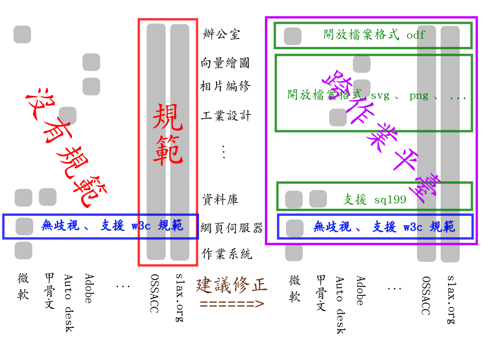

自由軟體與專屬軟體，誰的應用需要被規範？

研考會正在擬定「政府應用自由軟體共通需求規範」，我曾受邀參與 3／31 的外部專家會議。政府關心自由軟體，是一件好事；但是訂定這樣的縱向規範，真的有助於政府採用自由軟體嗎？或者應該換個方式訂定橫向規範，對專屬軟體與自由軟體一視同仁呢？
與會的眾多代表當中，有許多來自政府單位的朋友，從使用者的角度發言。他們認為：Linux 版本眾多，若不設定一個規範，真不知應該如何採購和使用自由軟體。
請想像一個情境：假設政府機關僱用公務員，向來以國民黨黨員為主，也僱了一點其他黨籍的人士；但從不僱用無黨籍人士。而後開始有一種呼聲：政府機關不應只獨厚特定政黨的黨員，應該也要開放錄用其他黨的黨員，甚至是無黨籍人士。但是各機關主管對於僱用無黨籍人士感到非常困擾，因為無黨籍人士沒有黨證字號和一貫的中心思想，於是政府開始研究訂定「政府僱用無黨籍人士共通需求規範」，例如無黨籍人士必須通過某些身心健康的檢查等等。
當然，這很合理。要作為一位公務人員，的確應該具備一些基本的身心健康條件。但是在比喻上，特定政黨人士呢？他們卻不需要接受任何檢查，不需要符合任何規範？有了這個規範之後，無黨籍人士想要進入政府機關服務時，面臨的門檻是提高了，還是降低了呢？無黨籍人士與特定政黨人士的權益，是越來越平等了，還是越來越不平等了呢？
呃，有人在臺下抗議為什麼拿國民黨作例子。其實這個比喻裡，要假設是民進黨也可以－如果同樣的行為，出自民進黨之手，更能夠讓您看清問題所在，那就請自行把上文當中的國民黨全部改成民進黨，邏輯是一樣的。重點不是〔那一個〕政黨〔真的〕壟斷政府資源，而是〔假設〕〔有一個〕黨壟斷政府資源的情況。
所以現在請把上述的「僱用公務員」全部改為「採用軟體」，把「XX黨」全部改為「微軟」，把「無黨籍人士」全部改為「自由軟體」，大家就可看出問題了。

{kind=link}
因此我在會議中提出如圖的建議。（會議上提的圖是舊版，小有差異。）橫軸是軟體公司或組織團體；縱軸是軟體類別。每一個灰色的方塊，代表一項產品。例如 Adobe 的產品包含向量繪圖與相片編修；OSSACC 則推出包山包海的 ezgo 光碟。圖的左半邊顯示的是現況：目前政府採用專屬軟體，完全沒有任何準則規範；而研考會正在策劃的「政府應用自由軟體共通需求規範」，卻只規範自由軟體。比較公平合理的做法，應如圖右半邊的狀態。圖右半邊當中的綠色圈圈意指：根據軟體性質，不分廠牌、不管是專屬或自由軟體，政府機關應提出相同的要求。例如所有的辦公室軟體，都應支援國際接軌的開放檔案格式 ODF（也是國家標準 CNS15251）；所有的資料庫伺服器，都應該支援 sql99 開放的介面等等。
事實上，藍色框的部分，正好呼應研考會推動已久也頗有成效的無障礙網頁：這個規範不分廠牌、不談自由不自由，一視同仁。更精確地說，無障礙網頁談的主要是更上層 html 檔案內容的部分，這樣的規範方式才是合理的規範。其他的綠色框，應該學這個藍色框才對；至於圖左半邊的紅色框，那其實並不是提供一個機會，而是在加深一種歧視：政府機關採購專屬軟體不需要顧慮任何規範；但若想採用自由軟體，則應要求廠商遵守這些規範。
最後，還應該加上一個紫色框：為了永續經營，避免將自身的存亡繫於被任何特定廠商牽制的善意，政府機關應優先採用跨作業平臺的應用軟體，以降低對任何特定作業系統的依賴。這終將有助於協助大學擺脫校長們集體被微軟羞辱的冏態、協助使用 Windows 7 的民眾擺脫隱私被迫繳械的委曲、協助臺灣的硬體廠商開拓一片新市場。
因為這個建議沒有被當場採納，所以後來的會議我也就沒再出席了。
不過，把格局再放大一點，研考會製定這個規範的過程，非常公開透明化－不僅在網站上（1）公開討論，甚至也（2）接受建議，連幾次的會議記錄都公開在網路上。如果您關心公民參與的話，應該會和我一樣，對研考會的這個做法給予高度肯定。這個世界上沒有誰能夠事事思慮週全；集思廣益才是王道。能夠善用網路科技，採用 web 2.0 的方式（1）將公共事務透明化（2）廣邀公民參與討論決策，這比訂出完美的規範更重要。二十年後再回頭看，我們或許會發現: 這個規範對於政府導入自由軟體，其實沒有什麼幫助；但研考會製定這個規範的過程，卻是臺灣邁向公民參與公共事務的一個重要里程碑。也許未來最值得所有人關心、對臺灣社會幫助最大的，並不是自由軟體或專屬軟體的應用規範，而是「政府機關促進公民參與」的行事規範。研考會資訊處這次的做法，值得作為其他政府機關邁向現代化的榜樣。